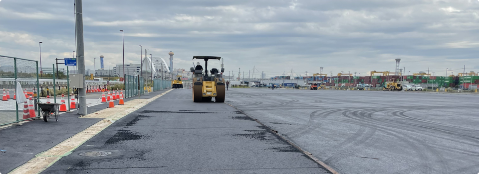
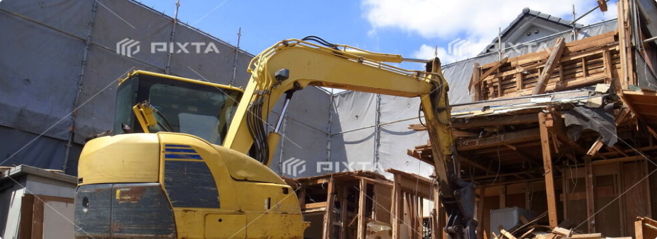

土木・建築工事
道路、トンネル、都市土木、鉄道や高速道路など、私たちの生活に必要不可欠なインフラ施設の建設を通じて、より安全・安心かつ豊かな社会の実現に貢献しています。
舗装
人や車が安全に通行でき、街の景観も美しく保つための工事をします。
道路・トンネル
日常生活に欠かせない道路やトンネルを手掛けています。山や河川が隔てる複雑な土地もお任せください。
外構
門扉や門柱、フェンスや駐車場など、ご要望に沿った工事が可能です。
開発工事
建築物の建築または特定工作物の建設の用に供するための区画形質の変更を行います
土木・建築工事
住宅・家屋の解体、マンション・アパートの解体はお任せください。
安全確保はもちろん、ご依頼者さまや、近隣住民の方々への細かな配慮を徹底し、解体後もより良い関係を築けるよう努めています。
解体時の電気や水道・電話線などの手続きについてもお気軽にご相談ください。
家屋解体工事は新しい建物を建てる前の更地を作るとても重要な仕事です。
近隣住民の方への配慮を徹底し、安全を優先しながら、効率的かつ短期間な作業を心がけています。
店舗や事務所、マンションの一室等、内装部分を撤去・解体し、原状回復させることや、元通りに戻す工事です。物件に応じて管理会社やオーナーとしっかり打ち合わせし進めていきます。
工場大型物件の場合、まず周囲への影響を考え、解体のプランを作成します。 騒音や粉塵などの十分な対策をとり、安全、衛生面にも配慮して作業を進めます。
パートナー事業
高度な技術やノウハウを取得した、プロフェッショナルな人材を派遣します。
建設工事には高度な技術やノウハウを必要とするため、優秀な人材が不足していることが問題になっています。Lifactでは、多くの現場を経験したスキルの高い人材が、プロジェクト成功に向けて、サポートしていきます。
施工までの流れ
土木のこと、建築のこと、住宅のこと。当社に関係することで気になることがあればお気軽にご相談ください。
敷地条件や周囲環境など実際に足を運び確認していきます。
ご不明点がありましたら遠慮なくご質問ください。
円滑な工事が行えるよう、周囲環境への配慮や安全対策を万全にして作業を進めていきます。